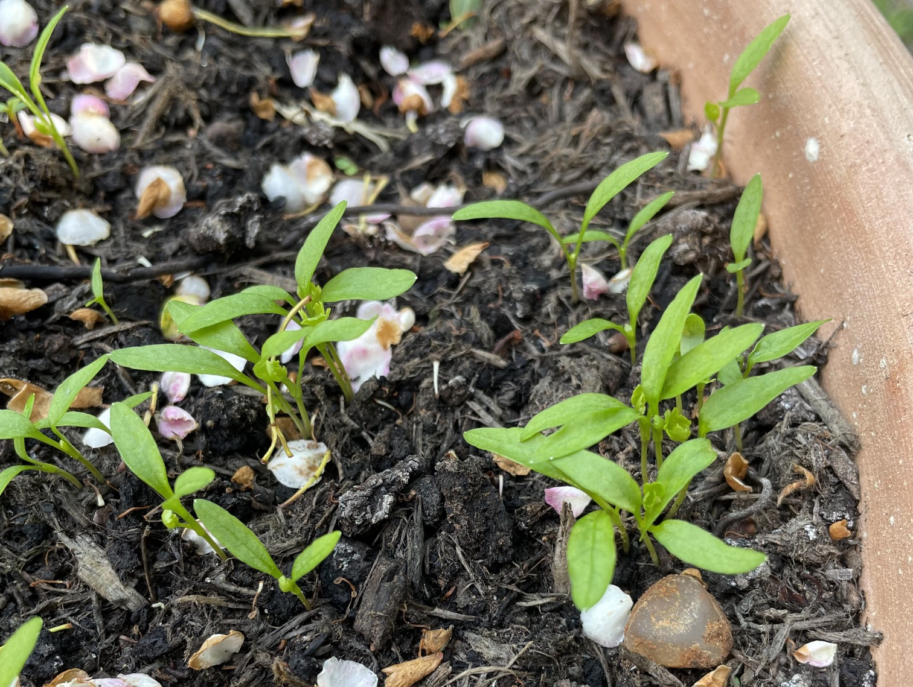
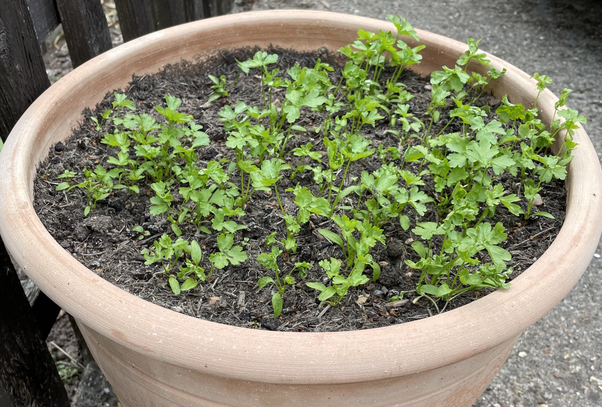
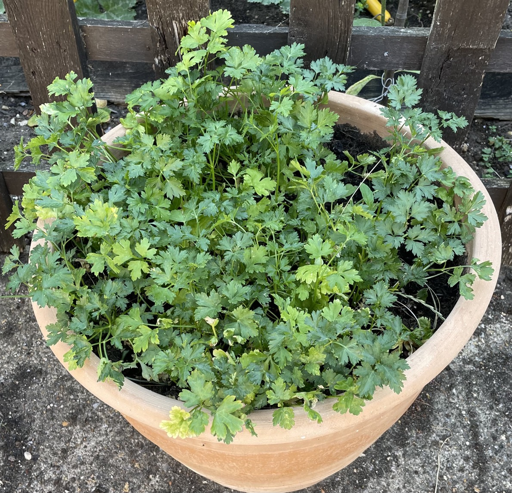
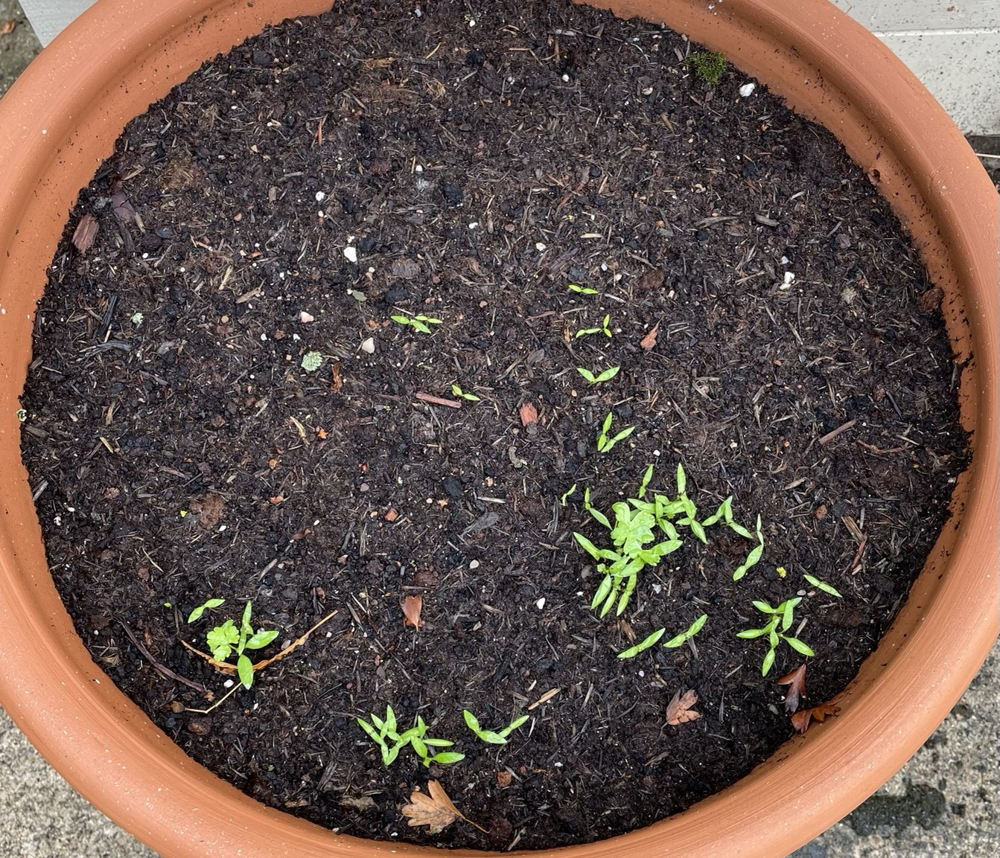

Parsley
Planting
Sew Mar-Jul
thin when 5 cm tall to 10 cm distance in pots
2022
Apr 20
Seeds sown in large pot outside
May 18 - 28 days

Jun 2 - 43 days

Jul 8 - 79 days

Sep 8
2nd sowing of year
